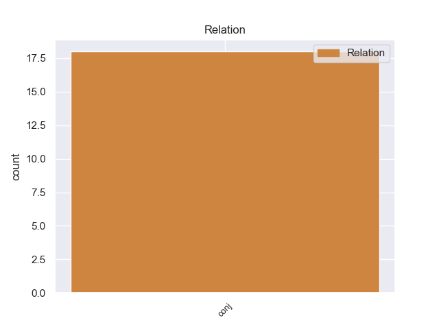
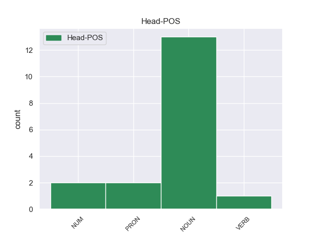
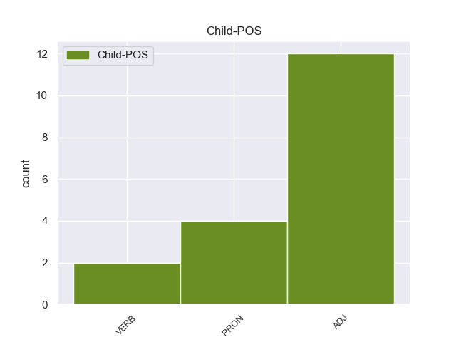

Distribution of features within this leaf



Agreement Rules sorted by frequency.
- When the dependent token is the conjunct(conj) of the head token, and the head token is NOUN and the dependent token is ADJ.
1 Επίσης _ _ _ _ 0 _ _ _
2 καταδικάστηκαν _ _ _ _ 0 _ _ _
3 , _ _ _ _ 0 _ _ _
4 σε _ _ _ _ 0 _ _ _
5 18 _ _ _ _ 0 _ _ _
6 μήνες _ _ _ _ 0 _ _ _
7 φυλάκιση _ _ _ _ 0 _ _ _
8 , _ _ _ _ 0 _ _ _
9 ένας _ _ _ _ 0 _ _ _
10 αξιωματούχος αξιωματούχος NOUN -- Case=Nom|Gender=Masc|Number=Sing 0 _ _ _
11 του _ _ _ _ 0 _ _ _
12 Γραφείου _ _ _ _ 0 _ _ _
13 Τύπου _ _ _ _ 0 _ _ _
14 των _ _ _ _ 0 _ _ _
15 Βαλεαρίδων _ _ _ _ 0 _ _ _
16 Νήσων _ _ _ _ 0 _ _ _
17 και _ _ _ _ 0 _ _ _
18 ένας _ _ _ _ 0 _ _ _
19 επικεφαλής επικεφαλής ADJ -- Case=Nom|Gender=Masc|Number=Sing 10 conj _ _
20 μιας _ _ _ _ 0 _ _ _
21 υπηρεσίας _ _ _ _ 0 _ _ _
22 εποικονωνίας _ _ _ _ 0 _ _ _
23 . _ _ _ _ 0 _ _ _
1 Η _ _ _ _ 0 _ _ _
2 κάμερα _ _ _ _ 0 _ _ _
3 της _ _ _ _ 0 _ _ _
4 εκπομπής _ _ _ _ 0 _ _ _
5 ταξιδεύει _ _ _ _ 0 _ _ _
6 σ _ _ _ _ 0 _ _ _
7 τη _ _ _ _ 0 _ _ _
8 Λίνδο _ _ _ _ 0 _ _ _
9 , _ _ _ _ 0 _ _ _
10 ένα ένας NUM -- Case=Acc|Gender=Neut|Number=Sing|NumType=Card 0 _ _ _
11 από _ _ _ _ 0 _ _ _
12 τα _ _ _ _ 0 _ _ _
13 πιο _ _ _ _ 0 _ _ _
14 όμορφα _ _ _ _ 0 _ _ _
15 χωριά _ _ _ _ 0 _ _ _
16 της _ _ _ _ 0 _ _ _
17 Ρόδου _ _ _ _ 0 _ _ _
18 , _ _ _ _ 0 _ _ _
19 σε _ _ _ _ 0 _ _ _
20 απόσταση _ _ _ _ 0 _ _ _
21 46 _ _ _ _ 0 _ _ _
22 χλμ. _ _ _ _ 0 _ _ _
23 από _ _ _ _ 0 _ _ _
24 την _ _ _ _ 0 _ _ _
25 πρωτεύουσα _ _ _ _ 0 _ _ _
26 , _ _ _ _ 0 _ _ _
27 χτισμένο χτίζω VERB -- Aspect=Perf|Case=Acc|Gender=Neut|Number=Sing|VerbForm=Part|Voice=Pass 10 conj _ _
28 πλάι _ _ _ _ 0 _ _ _
29 σ _ _ _ _ 0 _ _ _
30 τη _ _ _ _ 0 _ _ _
31 θάλασσα _ _ _ _ 0 _ _ _
32 και _ _ _ _ 0 _ _ _
33 κάτω _ _ _ _ 0 _ _ _
34 από _ _ _ _ 0 _ _ _
35 τον _ _ _ _ 0 _ _ _
36 επιβλητικό _ _ _ _ 0 _ _ _
37 βράχο _ _ _ _ 0 _ _ _
38 της _ _ _ _ 0 _ _ _
39 ακρόπολης _ _ _ _ 0 _ _ _
40 της _ _ _ _ 0 _ _ _
41 μεσαιωνικής _ _ _ _ 0 _ _ _
42 πόλης _ _ _ _ 0 _ _ _
43 της _ _ _ _ 0 _ _ _
44 Λίνδου _ _ _ _ 0 _ _ _
45 , _ _ _ _ 0 _ _ _
46 ένα _ _ _ _ 0 _ _ _
47 από _ _ _ _ 0 _ _ _
48 τα _ _ _ _ 0 _ _ _
49 πιο _ _ _ _ 0 _ _ _
50 γοητευτικά _ _ _ _ 0 _ _ _
51 θέρετρα _ _ _ _ 0 _ _ _
52 της _ _ _ _ 0 _ _ _
53 Ρόδου _ _ _ _ 0 _ _ _
54 , _ _ _ _ 0 _ _ _
55 που _ _ _ _ 0 _ _ _
56 συνδυάζει _ _ _ _ 0 _ _ _
57 την _ _ _ _ 0 _ _ _
58 ομορφιά _ _ _ _ 0 _ _ _
59 της _ _ _ _ 0 _ _ _
60 φύσης _ _ _ _ 0 _ _ _
61 με _ _ _ _ 0 _ _ _
62 την _ _ _ _ 0 _ _ _
63 πλούσια _ _ _ _ 0 _ _ _
64 πολιτιστική _ _ _ _ 0 _ _ _
65 κληρονομιά _ _ _ _ 0 _ _ _
66 . _ _ _ _ 0 _ _ _
1 Η _ _ _ _ 0 _ _ _
2 μία ένας PRON -- Case=Nom|Gender=Fem|Number=Sing|Person=3|PronType=Ind 0 _ _ _
3 , _ _ _ _ 0 _ _ _
4 σχετικά _ _ _ _ 0 _ _ _
5 με _ _ _ _ 0 _ _ _
6 το _ _ _ _ 0 _ _ _
7 ευρωπαϊκό _ _ _ _ 0 _ _ _
8 ένταλμα _ _ _ _ 0 _ _ _
9 σύλληψης _ _ _ _ 0 _ _ _
10 και _ _ _ _ 0 _ _ _
11 τις _ _ _ _ 0 _ _ _
12 διαδικασίες _ _ _ _ 0 _ _ _
13 παράδοσης _ _ _ _ 0 _ _ _
14 μεταξύ _ _ _ _ 0 _ _ _
15 των _ _ _ _ 0 _ _ _
16 κρατών _ _ _ _ 0 _ _ _
17 μελών _ _ _ _ 0 _ _ _
18 και _ _ _ _ 0 _ _ _
19 η _ _ _ _ 0 _ _ _
20 άλλη άλλος PRON -- Case=Nom|Gender=Fem|Number=Sing|Person=3|PronType=Ind 2 conj _ _
21 σχετικά _ _ _ _ 0 _ _ _
22 με _ _ _ _ 0 _ _ _
23 τον _ _ _ _ 0 _ _ _
24 κοινό _ _ _ _ 0 _ _ _
25 ορισμό _ _ _ _ 0 _ _ _
26 της _ _ _ _ 0 _ _ _
27 τρομοκρατίας _ _ _ _ 0 _ _ _
28 . _ _ _ _ 0 _ _ _
1 Σε _ _ _ _ 0 _ _ _
2 αυτές _ _ _ _ 0 _ _ _
3 περιλαμβάνονται _ _ _ _ 0 _ _ _
4 η _ _ _ _ 0 _ _ _
5 ατμοσφαιρική _ _ _ _ 0 _ _ _
6 ρύπανση _ _ _ _ 0 _ _ _
7 , _ _ _ _ 0 _ _ _
8 ο _ _ _ _ 0 _ _ _
9 θόρυβος _ _ _ _ 0 _ _ _
10 , _ _ _ _ 0 _ _ _
11 η _ _ _ _ 0 _ _ _
12 έλλειψη έλλειψη NOUN -- Case=Nom|Gender=Fem|Number=Sing 0 _ _ _
13 σωματικής _ _ _ _ 0 _ _ _
14 άσκησης _ _ _ _ 0 _ _ _
15 και _ _ _ _ 0 _ _ _
16 άλλες άλλος PRON -- Case=Nom|Gender=Fem|Number=Plur|Person=3|PronType=Ind 12 conj _ _
17 . _ _ _ _ 0 _ _ _
1 Δεν _ _ _ _ 0 _ _ _
2 υπάρχει _ _ _ _ 0 _ _ _
3 νόημα _ _ _ _ 0 _ _ _
4 σ _ _ _ _ 0 _ _ _
5 το _ _ _ _ 0 _ _ _
6 να _ _ _ _ 0 _ _ _
7 πούμε _ _ _ _ 0 _ _ _
8 ότι _ _ _ _ 0 _ _ _
9 πρέπει _ _ _ _ 0 _ _ _
10 να _ _ _ _ 0 _ _ _
11 χρησιμοποιούμε _ _ _ _ 0 _ _ _
12 το _ _ _ _ 0 _ _ _
13 δημόσιο _ _ _ _ 0 _ _ _
14 χρήμα _ _ _ _ 0 _ _ _
15 απλώς _ _ _ _ 0 _ _ _
16 και _ _ _ _ 0 _ _ _
17 μόνο _ _ _ _ 0 _ _ _
18 για _ _ _ _ 0 _ _ _
19 να _ _ _ _ 0 _ _ _
20 υποστηρίζουμε _ _ _ _ 0 _ _ _
21 ένα _ _ _ _ 0 _ _ _
22 αποτυχημένο αποτυγχάνω VERB -- Aspect=Perf|Case=Acc|Gender=Neut|Number=Sing|VerbForm=Part|Voice=Pass 0 _ _ _
23 ή _ _ _ _ 0 _ _ _
24 απηρχαιωμένο απαρχαιωμένος VERB -- Aspect=Perf|Case=Acc|Gender=Neut|Number=Sing|VerbForm=Part|Voice=Pass 22 conj _ _
25 σύστημα _ _ _ _ 0 _ _ _
26 . _ _ _ _ 0 _ _ _
1 Το _ _ _ _ 0 _ _ _
2 μόνο _ _ _ _ 0 _ _ _
3 συνεπώς _ _ _ _ 0 _ _ _
4 που _ _ _ _ 0 _ _ _
5 μπορούσαν _ _ _ _ 0 _ _ _
6 να _ _ _ _ 0 _ _ _
7 κάνουν _ _ _ _ 0 _ _ _
8 ήταν _ _ _ _ 0 _ _ _
9 ν' _ _ _ _ 0 _ _ _
10 αυξήσουν _ _ _ _ 0 _ _ _
11 την _ _ _ _ 0 _ _ _
12 επιρροή _ _ _ _ 0 _ _ _
13 τους _ _ _ _ 0 _ _ _
14 σ _ _ _ _ 0 _ _ _
15 τους _ _ _ _ 0 _ _ _
16 πληθυσμούς _ _ _ _ 0 _ _ _
17 της _ _ _ _ 0 _ _ _
18 περιοχής _ _ _ _ 0 _ _ _
19 , _ _ _ _ 0 _ _ _
20 παράλληλα _ _ _ _ 0 _ _ _
21 μ' _ _ _ _ 0 _ _ _
22 εκείνη _ _ _ _ 0 _ _ _
23 προς _ _ _ _ 0 _ _ _
24 τον _ _ _ _ 0 _ _ _
25 Σουλτάνο _ _ _ _ 0 _ _ _
26 σ _ _ _ _ 0 _ _ _
27 τη _ _ _ _ 0 _ _ _
28 Κωνσταντινούπολη _ _ _ _ 0 _ _ _
29 , _ _ _ _ 0 _ _ _
30 για _ _ _ _ 0 _ _ _
31 όσο _ _ _ _ 0 _ _ _
32 χρόνο _ _ _ _ 0 _ _ _
33 θα _ _ _ _ 0 _ _ _
34 " _ _ _ _ 0 _ _ _
35 παρέμενε _ _ _ _ 0 _ _ _
36 " _ _ _ _ 0 _ _ _
37 ( _ _ _ _ 0 _ _ _
38 ή _ _ _ _ 0 _ _ _
39 θα _ _ _ _ 0 _ _ _
40 του _ _ _ _ 0 _ _ _
41 επέτρεπαν _ _ _ _ 0 _ _ _
42 ) _ _ _ _ 0 _ _ _
43 τη _ _ _ _ 0 _ _ _
44 συνέχεια _ _ _ _ 0 _ _ _
45 της _ _ _ _ 0 _ _ _
46 Αυτοκρατορίας _ _ _ _ 0 _ _ _
47 του _ _ _ _ 0 _ _ _
48 , _ _ _ _ 0 _ _ _
49 προκειμένου _ _ _ _ 0 _ _ _
50 να _ _ _ _ 0 _ _ _
51 είναι _ _ _ _ 0 _ _ _
52 έτοιμες _ _ _ _ 0 _ _ _
53 να _ _ _ _ 0 _ _ _
54 υποστηρίξουν _ _ _ _ 0 _ _ _
55 ένα ένας NUM -- Case=Acc|Gender=Masc|Number=Sing|NumType=Ord 0 _ _ _
56 ή _ _ _ _ 0 _ _ _
57 περισσότερους πολύς ADJ -- Case=Acc|Degree=Cmp|Gender=Masc|Number=Plur 55 conj _ _
58 από _ _ _ _ 0 _ _ _
59 τους _ _ _ _ 0 _ _ _
60 διαδόχους _ _ _ _ 0 _ _ _
61 του _ _ _ _ 0 _ _ _
62 οθωμανικού _ _ _ _ 0 _ _ _
63 καθεστώτος _ _ _ _ 0 _ _ _
64 που _ _ _ _ 0 _ _ _
65 θα _ _ _ _ 0 _ _ _
66 μπορούσαν _ _ _ _ 0 _ _ _
67 να _ _ _ _ 0 _ _ _
68 ήταν _ _ _ _ 0 _ _ _
69 οι _ _ _ _ 0 _ _ _
70 Σέρβοι _ _ _ _ 0 _ _ _
71 , _ _ _ _ 0 _ _ _
72 οι _ _ _ _ 0 _ _ _
73 Έλληνες _ _ _ _ 0 _ _ _
74 , _ _ _ _ 0 _ _ _
75 οι _ _ _ _ 0 _ _ _
76 Βούλγαροι _ _ _ _ 0 _ _ _
77 , _ _ _ _ 0 _ _ _
78 οι _ _ _ _ 0 _ _ _
79 Αλβανοί _ _ _ _ 0 _ _ _
80 , _ _ _ _ 0 _ _ _
81 ακόμα _ _ _ _ 0 _ _ _
82 και _ _ _ _ 0 _ _ _
83 οι _ _ _ _ 0 _ _ _
84 γηγενείς _ _ _ _ 0 _ _ _
85 Μακεδόνες _ _ _ _ 0 _ _ _
86 , _ _ _ _ 0 _ _ _
87 που _ _ _ _ 0 _ _ _
88 οι _ _ _ _ 0 _ _ _
89 πιθανότητές _ _ _ _ 0 _ _ _
90 να _ _ _ _ 0 _ _ _
91 ιδρύσουν _ _ _ _ 0 _ _ _
92 ανεξάρτητα _ _ _ _ 0 _ _ _
93 έθνη _ _ _ _ 0 _ _ _
94 δεν _ _ _ _ 0 _ _ _
95 ήταν _ _ _ _ 0 _ _ _
96 και _ _ _ _ 0 _ _ _
97 εντελώς _ _ _ _ 0 _ _ _
98 ανύπαρκτες _ _ _ _ 0 _ _ _
99 . _ _ _ _ 0 _ _ _
1 Μια _ _ _ _ 0 _ _ _
2 υπεραγορά _ _ _ _ 0 _ _ _
3 θα _ _ _ _ 0 _ _ _
4 μπορούσε _ _ _ _ 0 _ _ _
5 να _ _ _ _ 0 _ _ _
6 διαθέτει _ _ _ _ 0 _ _ _
7 προς _ _ _ _ 0 _ _ _
8 πώληση _ _ _ _ 0 _ _ _
9 μία ένας PRON -- Case=Acc|Gender=Fem|Number=Sing|Person=3|PronType=Ind 0 _ _ _
10 ή _ _ _ _ 0 _ _ _
11 πολλές πολύς ADJ -- Case=Acc|Gender=Fem|Number=Plur 9 conj _ _
12 μάρκες _ _ _ _ 0 _ _ _
13 αν _ _ _ _ 0 _ _ _
14 πληροί _ _ _ _ 0 _ _ _
15 τα _ _ _ _ 0 _ _ _
16 κριτήρια _ _ _ _ 0 _ _ _
17 που _ _ _ _ 0 _ _ _
18 καθορίζει _ _ _ _ 0 _ _ _
19 ο _ _ _ _ 0 _ _ _
20 κατασκευαστής _ _ _ _ 0 _ _ _
21 . _ _ _ _ 0 _ _ _
Disagree Examples:
1 Τούτο _ _ _ _ 0 _ _ _
2 αποβαίνει _ _ _ _ 0 _ _ _
3 κυρίως _ _ _ _ 0 _ _ _
4 σε _ _ _ _ 0 _ _ _
5 βάρος _ _ _ _ 0 _ _ _
6 των _ _ _ _ 0 _ _ _
7 ποιοτικών _ _ _ _ 0 _ _ _
8 κριτηρίων κριτήριο NOUN -- Case=Gen|Gender=Neut|Number=Plur 0 _ _ _
9 , _ _ _ _ 0 _ _ _
10 ιδίως _ _ _ _ 0 _ _ _
11 των _ _ _ _ 0 _ _ _
12 κοινωνικών κοινωνικός ADJ -- Case=Gen|Gender=Fem|Number=Plur 8 conj _ _
13 , _ _ _ _ 0 _ _ _
14 των _ _ _ _ 0 _ _ _
15 οικολογικών _ _ _ _ 0 _ _ _
16 και _ _ _ _ 0 _ _ _
17 των _ _ _ _ 0 _ _ _
18 κριτηρίων _ _ _ _ 0 _ _ _
19 που _ _ _ _ 0 _ _ _
20 αφορούν _ _ _ _ 0 _ _ _
21 τις _ _ _ _ 0 _ _ _
22 επιπτώσεις _ _ _ _ 0 _ _ _
23 σ _ _ _ _ 0 _ _ _
24 την _ _ _ _ 0 _ _ _
25 υγεία _ _ _ _ 0 _ _ _
26 . _ _ _ _ 0 _ _ _
1 Το _ _ _ _ 0 _ _ _
2 επίπεδο _ _ _ _ 0 _ _ _
3 γνώσεων _ _ _ _ 0 _ _ _
4 των _ _ _ _ 0 _ _ _
5 μελών _ _ _ _ 0 _ _ _
6 της _ _ _ _ 0 _ _ _
7 Επιτροπής _ _ _ _ 0 _ _ _
8 Περιφερειακής _ _ _ _ 0 _ _ _
9 Πολιτικής _ _ _ _ 0 _ _ _
10 , _ _ _ _ 0 _ _ _
11 Μεταφορών _ _ _ _ 0 _ _ _
12 και _ _ _ _ 0 _ _ _
13 Τουρισμού _ _ _ _ 0 _ _ _
14 δεν _ _ _ _ 0 _ _ _
15 παύει _ _ _ _ 0 _ _ _
16 ποτέ _ _ _ _ 0 _ _ _
17 να _ _ _ _ 0 _ _ _
18 με _ _ _ _ 0 _ _ _
19 εκπλήσσει _ _ _ _ 0 _ _ _
20 , _ _ _ _ 0 _ _ _
21 ιδιαίτερα _ _ _ _ 0 _ _ _
22 όσον _ _ _ _ 0 _ _ _
23 αφορά _ _ _ _ 0 _ _ _
24 τις _ _ _ _ 0 _ _ _
25 τεχνικές _ _ _ _ 0 _ _ _
26 λεπτομέρειες _ _ _ _ 0 _ _ _
27 , _ _ _ _ 0 _ _ _
28 όπως _ _ _ _ 0 _ _ _
29 είναι _ _ _ _ 0 _ _ _
30 ο _ _ _ _ 0 _ _ _
31 αριθμός _ _ _ _ 0 _ _ _
32 των _ _ _ _ 0 _ _ _
33 αξόνων _ _ _ _ 0 _ _ _
34 σ _ _ _ _ 0 _ _ _
35 τα _ _ _ _ 0 _ _ _
36 λεωφορεία _ _ _ _ 0 _ _ _
37 , _ _ _ _ 0 _ _ _
38 η _ _ _ _ 0 _ _ _
39 ακτίνα ακτίνα NOUN -- Case=Nom|Gender=Fem|Number=Sing 0 _ _ _
40 στροφής _ _ _ _ 0 _ _ _
41 των _ _ _ _ 0 _ _ _
42 λεωφορείων _ _ _ _ 0 _ _ _
43 , _ _ _ _ 0 _ _ _
44 και _ _ _ _ 0 _ _ _
45 τα _ _ _ _ 0 _ _ _
46 λοιπά λοιπός ADJ -- Case=Nom|Gender=Neut|Number=Plur 39 conj _ _
47 και _ _ _ _ 0 _ _ _
48 τα _ _ _ _ 0 _ _ _
49 λοιπά _ _ _ _ 0 _ _ _
50 . _ _ _ _ 0 _ _ _
1 Ωστόσο _ _ _ _ 0 _ _ _
2 , _ _ _ _ 0 _ _ _
3 εκφράζω _ _ _ _ 0 _ _ _
4 ανησυχία _ _ _ _ 0 _ _ _
5 όσον _ _ _ _ 0 _ _ _
6 αφορά _ _ _ _ 0 _ _ _
7 το _ _ _ _ 0 _ _ _
8 ζήτημα _ _ _ _ 0 _ _ _
9 μιας _ _ _ _ 0 _ _ _
10 δικαστικής _ _ _ _ 0 _ _ _
11 απόφασης _ _ _ _ 0 _ _ _
12 που _ _ _ _ 0 _ _ _
13 δεν _ _ _ _ 0 _ _ _
14 είναι _ _ _ _ 0 _ _ _
15 ακόμη _ _ _ _ 0 _ _ _
16 τελεσίδικη _ _ _ _ 0 _ _ _
17 : _ _ _ _ 0 _ _ _
18 ενεργούμε _ _ _ _ 0 _ _ _
19 ως _ _ _ _ 0 _ _ _
20 δικαστής δικαστής NOUN -- Case=Nom|Gender=Masc|Number=Sing 0 _ _ _
21 και _ _ _ _ 0 _ _ _
22 ένορκοι ένορκος ADJ -- Case=Nom|Gender=Fem|Number=Plur 20 conj _ _
23 αν _ _ _ _ 0 _ _ _
24 αρνηθούμε _ _ _ _ 0 _ _ _
25 σε _ _ _ _ 0 _ _ _
26 κάποιον _ _ _ _ 0 _ _ _
27 το _ _ _ _ 0 _ _ _
28 δικαίωμα _ _ _ _ 0 _ _ _
29 να _ _ _ _ 0 _ _ _
30 είναι _ _ _ _ 0 _ _ _
31 υποψήφιος _ _ _ _ 0 _ _ _
32 για _ _ _ _ 0 _ _ _
33 μια _ _ _ _ 0 _ _ _
34 σύμβαση _ _ _ _ 0 _ _ _
35 χωρίς _ _ _ _ 0 _ _ _
36 να _ _ _ _ 0 _ _ _
37 έχει _ _ _ _ 0 _ _ _
38 εκδοθεί _ _ _ _ 0 _ _ _
39 τελική _ _ _ _ 0 _ _ _
40 απόφαση _ _ _ _ 0 _ _ _
41 ή _ _ _ _ 0 _ _ _
42 να _ _ _ _ 0 _ _ _
43 έχει _ _ _ _ 0 _ _ _
44 γίνει _ _ _ _ 0 _ _ _
45 ανάλυση _ _ _ _ 0 _ _ _
46 ως _ _ _ _ 0 _ _ _
47 προς _ _ _ _ 0 _ _ _
48 το _ _ _ _ 0 _ _ _
49 αν _ _ _ _ 0 _ _ _
50 ένα _ _ _ _ 0 _ _ _
51 άτομο _ _ _ _ 0 _ _ _
52 είναι _ _ _ _ 0 _ _ _
53 ένοχο _ _ _ _ 0 _ _ _
54 για _ _ _ _ 0 _ _ _
55 ένα _ _ _ _ 0 _ _ _
56 αδίκημα _ _ _ _ 0 _ _ _
57 ή _ _ _ _ 0 _ _ _
58 όχι _ _ _ _ 0 _ _ _
59 . _ _ _ _ 0 _ _ _
1 Ο _ _ _ _ 0 _ _ _
2 κ. _ _ _ _ 0 _ _ _
3 Gahrton _ _ _ _ 0 _ _ _
4 εφιστά _ _ _ _ 0 _ _ _
5 την _ _ _ _ 0 _ _ _
6 προσοχή _ _ _ _ 0 _ _ _
7 μας _ _ _ _ 0 _ _ _
8 σε _ _ _ _ 0 _ _ _
9 ορισμένα _ _ _ _ 0 _ _ _
10 από _ _ _ _ 0 _ _ _
11 τα _ _ _ _ 0 _ _ _
12 μέσα _ _ _ _ 0 _ _ _
13 που _ _ _ _ 0 _ _ _
14 έχουμε _ _ _ _ 0 _ _ _
15 χρησιμοποιήσει _ _ _ _ 0 _ _ _
16 σε _ _ _ _ 0 _ _ _
17 άλλα _ _ _ _ 0 _ _ _
18 μέρη _ _ _ _ 0 _ _ _
19 και _ _ _ _ 0 _ _ _
20 συνιστά _ _ _ _ 0 _ _ _
21 να _ _ _ _ 0 _ _ _
22 τα _ _ _ _ 0 _ _ _
23 εφαρμόσουμε _ _ _ _ 0 _ _ _
24 σ _ _ _ _ 0 _ _ _
25 τον _ _ _ _ 0 _ _ _
26 Νότιο _ _ _ _ 0 _ _ _
27 Καύκασο _ _ _ _ 0 _ _ _
28 : _ _ _ _ 0 _ _ _
29 κοινή _ _ _ _ 0 _ _ _
30 στρατηγική _ _ _ _ 0 _ _ _
31 , _ _ _ _ 0 _ _ _
32 σύμφωνο _ _ _ _ 0 _ _ _
33 σταθερότητας _ _ _ _ 0 _ _ _
34 , _ _ _ _ 0 _ _ _
35 ειδικό _ _ _ _ 0 _ _ _
36 απεσταλμένο απεσταλμένος NOUN -- Case=Acc|Gender=Masc|Number=Sing 0 _ _ _
37 και _ _ _ _ 0 _ _ _
38 άλλα άλλος PRON -- Case=Acc|Gender=Neut|Number=Plur|Person=3|PronType=Ind 36 conj _ _
39 . _ _ _ _ 0 _ _ _
1 Αξιωματούχοι _ _ _ _ 0 _ _ _
2 της _ _ _ _ 0 _ _ _
3 Υεμένης _ _ _ _ 0 _ _ _
4 και _ _ _ _ 0 _ _ _
5 γιατροί _ _ _ _ 0 _ _ _
6 ανέφεραν _ _ _ _ 0 _ _ _
7 ότι _ _ _ _ 0 _ _ _
8 « _ _ _ _ 0 _ _ _
9 άγριες _ _ _ _ 0 _ _ _
10 συμπλοκές _ _ _ _ 0 _ _ _
11 μεταξύ _ _ _ _ 0 _ _ _
12 κυβερνητικών _ _ _ _ 0 _ _ _
13 δυνάμεων δύναμη NOUN -- Case=Gen|Gender=Fem|Number=Plur 0 _ _ _
14 και _ _ _ _ 0 _ _ _
15 μαχητών μαχητός ADJ -- Case=Gen|Gender=Masc|Number=Plur 13 conj _ _
16 της _ _ _ _ 0 _ _ _
17 Αλ _ _ _ _ 0 _ _ _
18 Κάιντα _ _ _ _ 0 _ _ _
19 σ _ _ _ _ 0 _ _ _
20 το _ _ _ _ 0 _ _ _
21 νότο _ _ _ _ 0 _ _ _
22 της _ _ _ _ 0 _ _ _
23 χώρας _ _ _ _ 0 _ _ _
24 είχαν _ _ _ _ 0 _ _ _
25 σαν _ _ _ _ 0 _ _ _
26 αποτέλεσμα _ _ _ _ 0 _ _ _
27 να _ _ _ _ 0 _ _ _
28 χάσουν _ _ _ _ 0 _ _ _
29 την _ _ _ _ 0 _ _ _
30 ζωή _ _ _ _ 0 _ _ _
31 τους _ _ _ _ 0 _ _ _
32 35 _ _ _ _ 0 _ _ _
33 στρατιώτες _ _ _ _ 0 _ _ _
34 και _ _ _ _ 0 _ _ _
35 20 _ _ _ _ 0 _ _ _
36 ένοπλοι _ _ _ _ 0 _ _ _
37 » _ _ _ _ 0 _ _ _
38 . _ _ _ _ 0 _ _ _